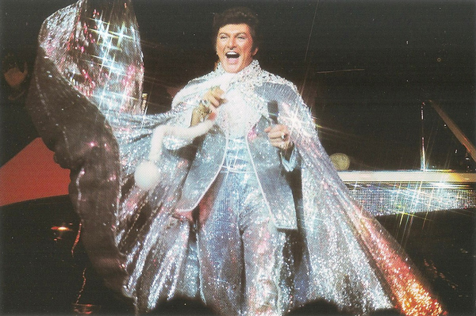
.
Just when we thought it couldn't get any more vulgar, we discovered the Liberace Museum which featured many stage costumes, cars, jewelry and lavishly-decorated pianos that belonged to the American entertainer and pianist Wladziu Valentino Liberace, better known as Liberace.
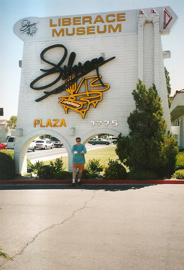
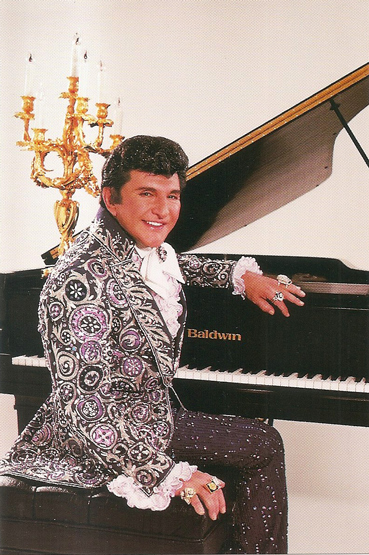
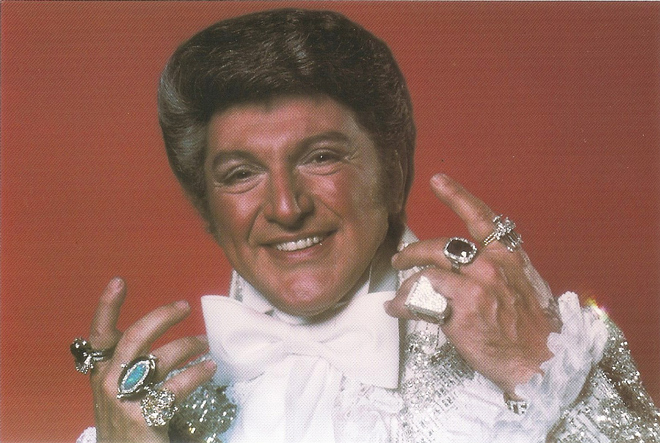
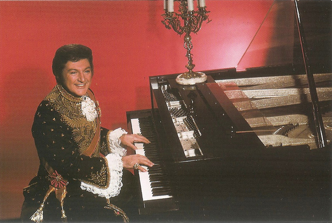
In 1982, Scott Thorson, Liberace's 22-year-old former chauffeur and live-in lover of five years, sued the pianist for $113 million in palimony after he was 'let go' by Liberace. Liberace continued to deny that he was homosexual and, during court depositions in 1984, he insisted that Thorson was never his lover. The case was settled out of court in 1986, with Thorson receiving a $75,000 cash settlement, plus three cars and three pet dogs worth another $20,000. Thorson stated after Liberace's death that he settled because he knew that Liberace was dying and that he had intended to sue based on conversion of property rather than palimony. He later attested that Liberace was a "boring guy" in his private life and mostly preferred to spend his free time cooking, decorating and playing with his dogs, and also that he never played the piano outside of his public performances.
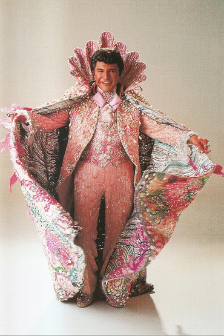
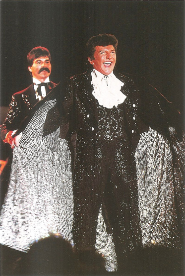
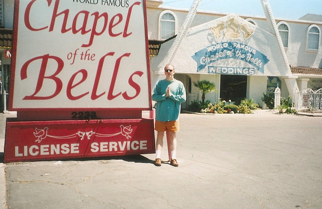
Caesars Palace (notable for its lack of an apostrophe) was established in 1966 by Jay Sarno, who sought to create an opulent facility that gave guests a sense of life during the Roman Empire. It contained many statues, columns, and iconography typical of Hollywood Roman period productions including a 20-foot statue of Augustus Caesar near the entrance..
Notable entertainers who have performed at Caesars Palace include Frank Sinatra, Dean Martin, Sammy Davis Jr., Rod Stewart, Stevie Nicks, Celine Dion, Ike & Tina Turner, Shania Twain, Bette Midler, Cher, Elton John, Liberace, Diana Ross, Liza Minnelli, Julio Iglesias, Harry Belafonte, Lena Horne, Judy Garland, Tony Bennett, Gloria Estefan and Mariah Carey.
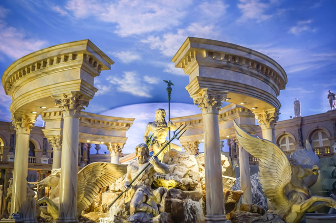
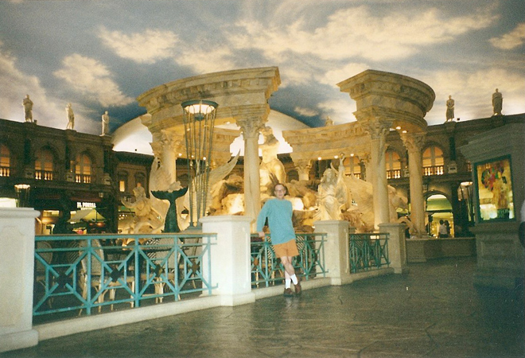
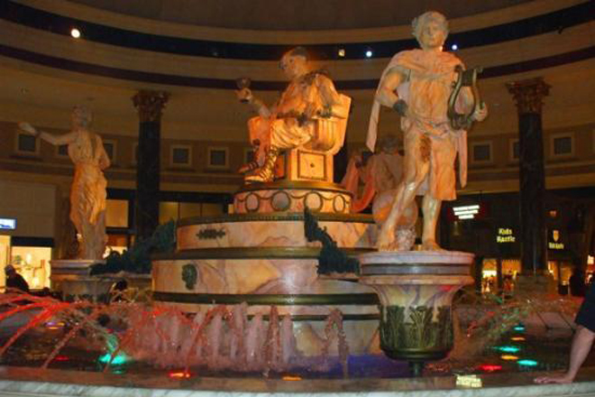
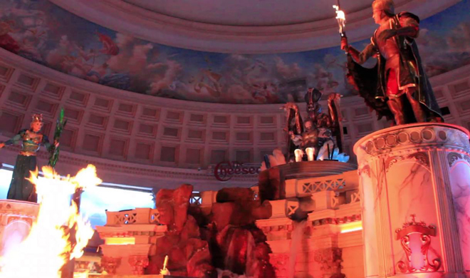
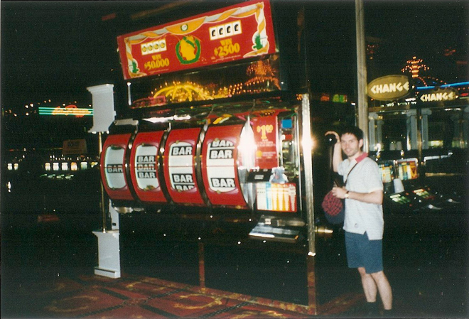
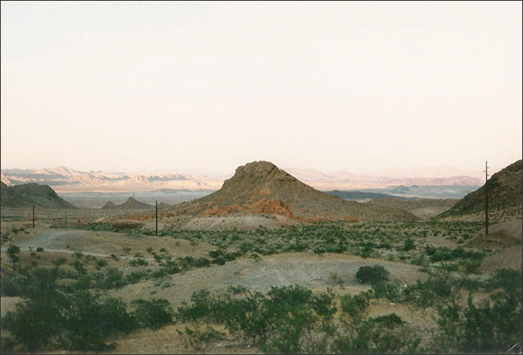